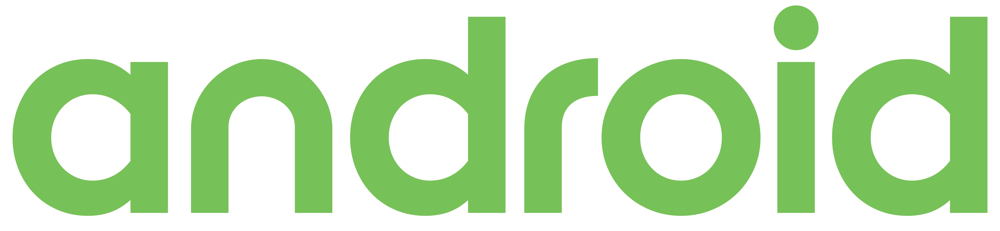
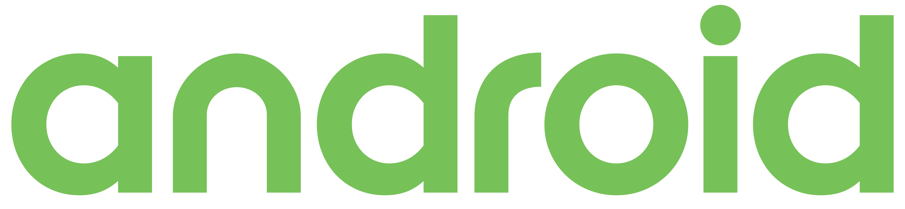

ABOUT ME
Ambitious computer scientist with strong programming knowledge in Python, C and Java. I am an outgoing and high performing allowing me to work well in groups to develop innovative, and creative solutions. I am seeking full-time position with challenging hands-on opportunities to further develop my skills in programming and software development.

WORK EXPERIENCE
Informatics Assistant  Government of Canada // Sept. 19 2017 – Apr. 30 2018 (8 month Co-Op)
Government of Canada // Sept. 19 2017 – Apr. 30 2018 (8 month Co-Op)
- Diagnosed computer software and hardware issues for clients
- Swapped and installed damaged components into laptops
- Brought a new meaning to efficient by introducing a new client follow up procedures resulting in 25% faster follow up time
- Demonstrated leadership and teamwork by inputting ideas in meetings and lead discussion topics.
- Defined new expected levels of multitasking and the ability to meet deadlines through time management skills.
- Set a record for 10% more clients served in Edmonton by establishing strong relationships with clients through interpersonal skills.
SIDE PROJECTS
- Created a mobile endless runner game using C#
- Learned About handling game events, triggers, game objects, physics engines, C#, scripting and pixel art.
FEELTRIP Android App Development
 
 - Using Android Studio and Java, created a mobile social network allowing users to express their moods, images and texts.
- Worked with Google Maps API to create a visual representation of online friends currently connected with.
- Designed and implemented front end UI elements to create a cohesive, simple and responsive design.
STEPS Web Application


- Working alongside a six member team, we used JavaScript, React, Python, Django, and ArcGIS, to create a web app that allows pedestrians to rate sidewalks in terms of comfort, safety, sense of security, etc.
- Used custom REST APIs to send and receive data.
- Heavily worked on front end UI design. Using ArcGIS and JavaScript to develop an intuitive and simple user interface.
- Hands on with Agile methodologies such as SCRUM, and planning poker
Unity Game Development
What Can I Offer?
Experienced in working on frontend web design and UI, I can improve existing webpages and create new simple and responsive websites. Able to work with Django, and REST API's for seemless web intergration. Strong interpersonal skills allow me to quickly, and easily create a fun and enjoyable work enviroment.